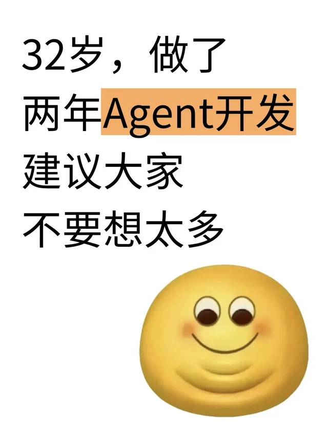
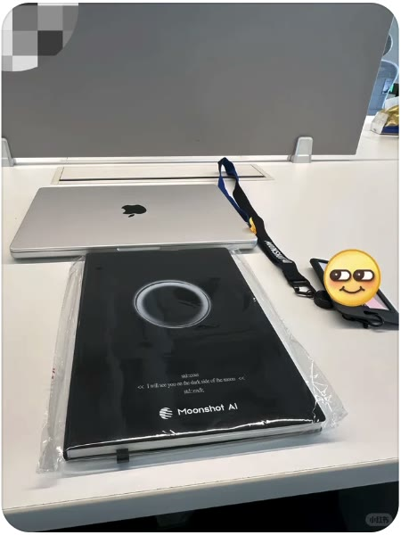

【记忆系统召回分享】
チリヌルヲカ面向小红书网页版的 Chrome 扩展原型
明显的推广与空洞的情绪内容，会占用你的视线。RedNote NoBoost 让它们安静一点，也让判断理由摆在明处。
手动启动 · 命中才模糊 · 随时查看原文
【记忆系统召回分享】
チリヌルヲカ
arXiv 全面限投：每人每月仅 2 篇
科技圈刚刚
世界上最舒服的配色 🎨
像素与玫瑰真实帖子 / 滚动体验
沿着这一页向下滚动，像刷推荐流一样看真实帖子。遮罩取自插件实际判定记录；此页不实时调用 Jev。
チリヌルヲカ
科技圈刚刚

大厂电流
像素与玫瑰

艾欧同学
LOONA

金生道

董阳鸟
jij

喂自己袋盐
想在自己的信息流里试试？
安装并开始扫描不是屏蔽一切
这个项目不评价作者，也不把“提到商品”或“表达情绪”当成问题。它尝试识别的是：强烈的转化意图，和缺乏事实与信息增量的情绪刺激。
值得看的笔记，
继续留在信息流里。
它如何判断
封面文字 / OCR
封面上真正写着什么？只识别封面，图片留在本地处理。
在浏览器本地运行 PP-OCRv6 Small，提取封面上真正写着什么。不截整页，也不扫描帖子后面的图片。
标题与封面文字合计不超过 20 字时才尝试补取正文；正文拿不到，就如实记录缺失。
把可用文字合并为一次判断。商业意图、情绪刺激与独立信息价值，一起放进同一套规则里看。
对应过滤开关开启且证据足够时才遮罩。不确定或失败时，帖子保持可见。
商业遮罩 = (商业意图 ≥ C) ∧ (信息价值 ≤ 0.50)
情绪遮罩 = (纯情绪 ≥ E ∨ 焦虑对立 ≥ 0.76 + 0.24E) ∧ (信息价值 ≤ 0.30)
C、E 是面板中分别可调的商业、情绪严格度，默认 0.60 和 0.50。Jev 给出分数，插件按以上门槛决定是否遮罩；过滤开关还须开启，且不能命中安全守卫、材料不完整或分数缺失。
控制权在你手里
商业推广与情绪类内容分别启用、分别调节 0–1 门槛；关闭的类别不会成为遮罩原因。
遮罩会列出实际命中的判断与阈值。你可以查看原内容，当前页面不再反复遮住它。
面板可查看逐帖 OCR、Jev 输入输出、结果与费用估算。检测历史只属于当前页面会话。
透明边界
封面由本地 OCR 识别；标题、取得的正文与 OCR 文字会发送给 TypeSafe/Jev。个人 API Key 保存在浏览器本地扩展存储中。
扩展不自动打开帖子，也不点赞、评论或发布内容。它只在桌面 Chrome 的小红书网页版首页推荐流工作；未登录时可能被网站要求登录。
当前仍是 V1 原型；识别与判定需要真实使用和带标签样本继续验证。
本地试用
Chrome 116+ · Node.js 20+ · 你自己的 TypeSafe/Jev API Key
git clone https://github.com/pipiyapi/rednote-noboost.git
cd rednote-noboost
npm ci && npm run build在 chrome://extensions 开启开发者模式，加载仓库里的 extension/ 文件夹。
在插件面板保存 Jev API Key，等待 OCR 显示绿色“健康”，再打开小红书网页版首页点击“开始扫描”。
展示模式 · 向下滚动或按方向键切换章节 · 点击右上角退出